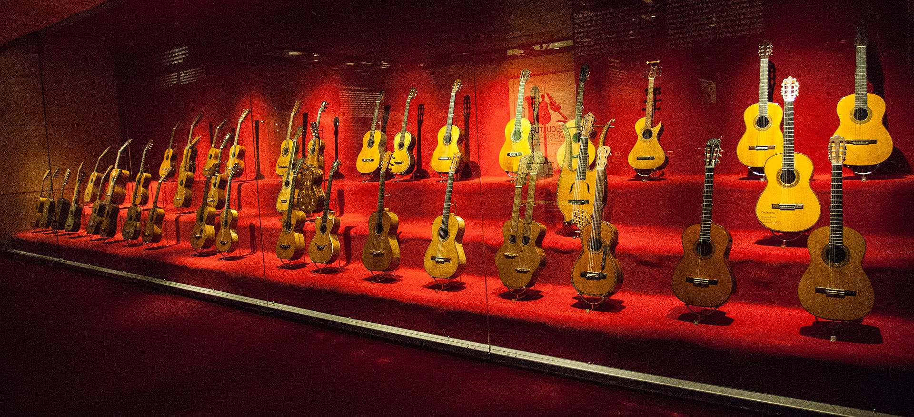
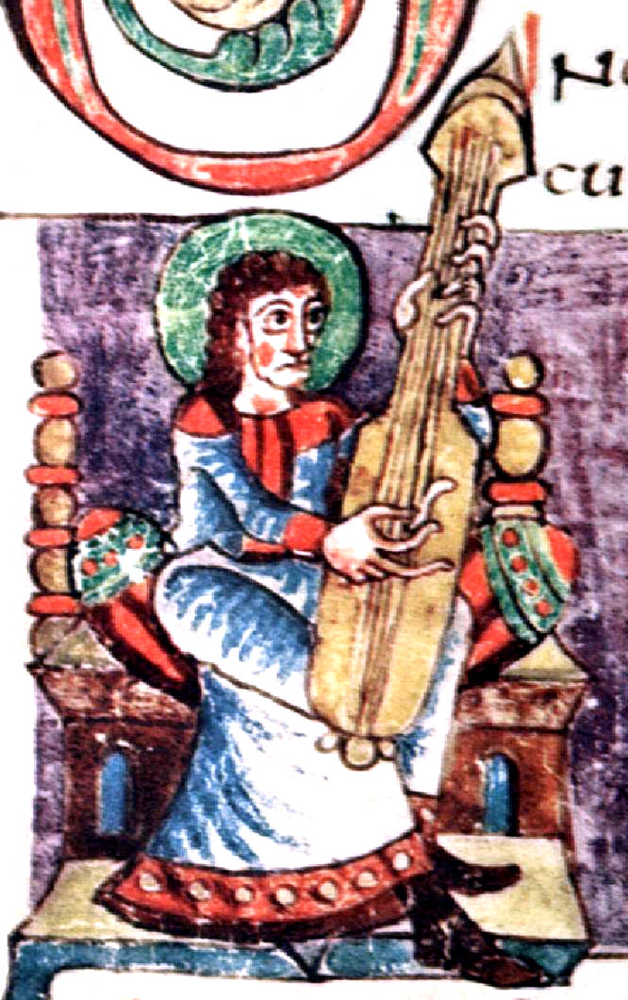
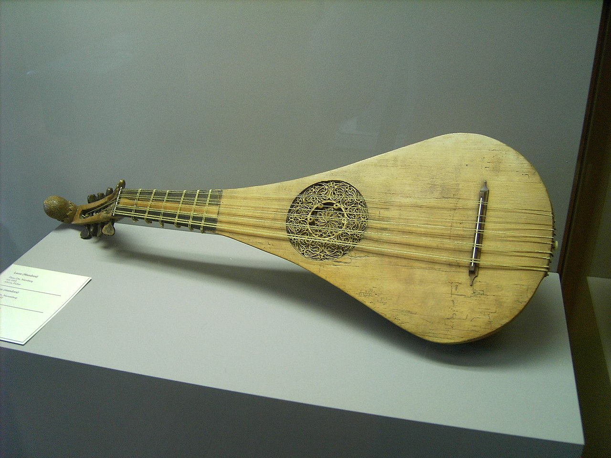
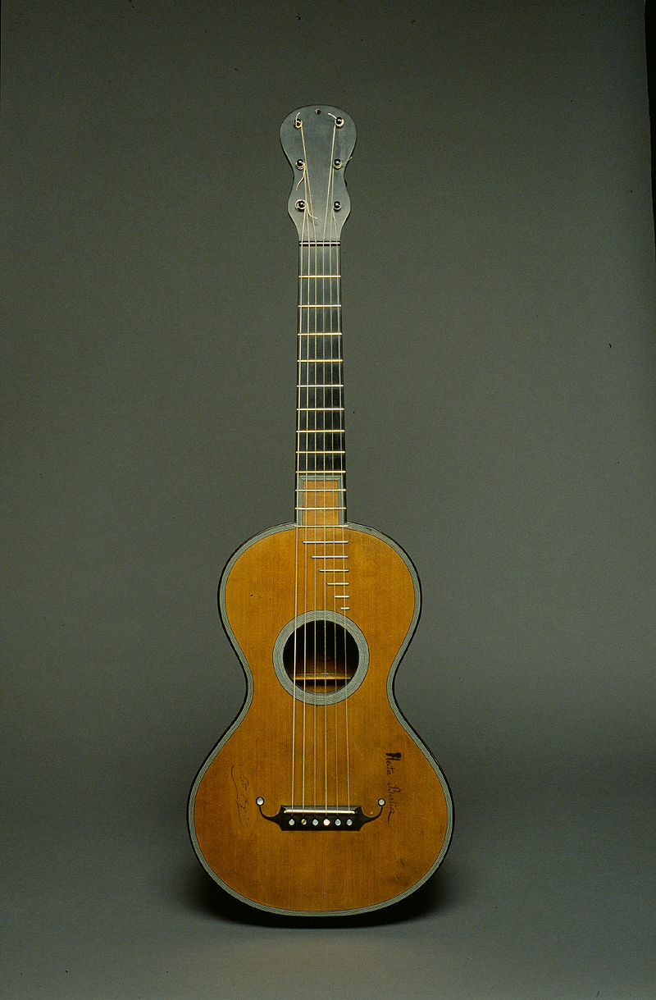
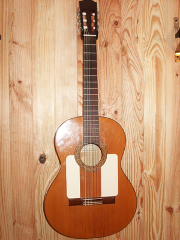
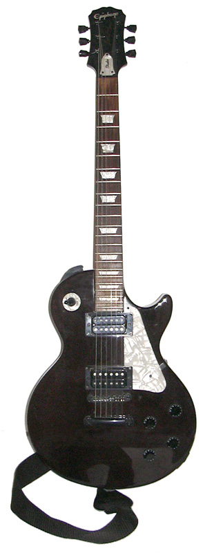

Historia de la guitarra
Origen
Los orígenes y evolución de la guitarra no están demasiado claros, ya que numerosos instrumentos similares eran utilizados en la antigüedad, por lo que es usual seguir la trayectoria de este instrumento a través de las representaciones pictóricas y escultóricas encontradas a lo largo de la historia. Existen evidencias arqueológicas en bajorrelieves encontrados en Alaça Hüyük (norte de la actual Turquía) de que en torno al año 1000 a. C. los hititas y asirios crearon instrumentos de cuerda parecidos a la lira (el instrumento de varias cuerdas más sencillo y antiguo del mundo) pero con el agregado de una caja de resonancia, por lo que serían antecesores de la guitarra. También se han encontrado representaciones en dibujos del antiguo Egipto que se asemejan a la guitarra.234 Existen varias hipótesis acerca de sus orígenes. Una de ellas le da un origen grecolatino y afirma que es un descendiente de la fidícula. Otra de las más populares considera que la guitarra es un instrumento introducido por los árabes durante la conquista musulmana de la península ibérica y que posteriormente evolucionó en España.3 Ambas hipótesis tienen su razón etimológica. Al parecer los primeros cordófonos llegaron hasta los griegos, que deformaron ligeramente su nombre, kithára o kettarah. Según Corominas, la acentuación revela el origen de la palabra en el griego kithára. La palabra cíthara que derivaría después en cítara y finalmente cedra en castellano parece que sería utilizada para el instrumento sin mango (más parecido a la lira), mientras que se supone que el vocablo griego se habría utilizado para el instrumento al que se le habría añadido un mango al comienzo de nuestra era. Muchos estudiosos y musicólogos atribuyen la llegada de la guitarra a España por medio del Imperio romano en el año 400.234 La otra hipótesis tiene su fundamento etimológico en la palabra árabe para guitarra, qīṯārah,5 que si bien igualmente originaria del griego, podría haber sido introducida por los conquistadores árabes y no por los romanos. Hay también una hipótesis arabista acerca del origen del laúd que sostiene que el primer instrumento con mástil fue la ud árabe, cuyo nombre los españoles terminaron fundiendo erróneamente con su artículo: «la ud» femenina se convirtió en el masculino "laúd". Fueron precisamente los árabes quienes introdujeron el instrumento en España, donde evolucionó de acuerdo a los gustos musicales de la plebe bajo dominación árabe.
Edad Media
En los siglos XI y XII pueden distinguirse dos tipos de "guitarres" o "guiternes". Por un lado la morisca o mandora, con forma ovalada de media pera y que se asemeja al laúd árabe y a la mandolina. Por otro lado la guitarra latina, una evolución de las antiguas cedras, cítolas y cítaras, de fondo plano, unida por aros con mango largo y cuyo clavijero era similar al del violín. La primera de ellas concuerda con la hipótesis del origen oriental de la guitarra, una especie de laúd asirio que se habría extendido por Persia y Arabia, hasta llegar a España durante la estancia árabe en la península ibérica. La segunda, reforzaría la hipótesis del origen greco-latino del instrumento. Ambos tipos están representados en las miniaturas de las Cantigas de Santa María de Alfonso X el Sabio, de 1270, aunque una de las representaciones más antiguas que se conservan está en Europa Occidental, en un Pasionario de la abadía de Zwiefalten, del año 1180.
En el siglo XIV, los poetas medievales franceses Guillaume de Machaut y Eustache Deschamps nombran en sus obras a la "guiterna", sin precisar el tipo.
La guitarra latina evolucionó hasta dar lugar a dos instrumentos diferentes: la vihuela, que estaba dotada de seis órdenes (cuerdas dobles) y que tuvo una amplia difusión entre la aristocracia y los trovadores y músicos profesionales; y la guitarra, de cuatro órdenes y de uso más popular.3
Siglo XVI
En el siglo XVI comienzan a realizarse numerosas composiciones para guitarra. Esta gran producción tiene como centro a España.2 La primera obra conocida para guitarra de cuatro órdenes aparece en la obra Tres libros de música en cifra para vihuela, publicada en 1546 por Alonso Mudarra en Sevilla. En esa época era habitual confundir los nombres de estos instrumentos, y fue a finales de siglo cuando comenzaron a diferenciarse. La guitarra fue utilizada principalmente como instrumento de acompañamiento y principalmente con la técnica del rasgueado.
Siglo XVII
El tratado más antiguo sobre la guitarra española fue publicado en Barcelona en 1596 por Juan Carlos Amat con el título de Guitarra española de cinco órdenes...7 En 1606 Girolamo Montesardo publicó en Bolonia la primera gran obra para guitarra titulada Nuova inventione d'involatura per sonare Il balleti sopra la chitarra espagnuola y G. A. Colonna Intavolatura di chitarra alla spagnuola en 1620.6 Habitualmente se atribuye la inclusión de la quinta cuerda al músico y poeta andaluz Vicente Espinel. La atribución de esta invención la realizó Lope de Vega, pero fue refutada por Nicolao Doici de Velasco (1640) y por Gaspar Sanz (1684) en sus tratados sobre la guitarra española. Sustentan sus afirmaciones en el hecho de que once años antes del nacimiento de Espinel, Bermudo mencionó una guitarra de cinco órdenes. No obstante, aunque Espinel no fuera el inventor de la guitarra española de cinco órdenes, probablemente fue quien más se encargó de su difusión popular en todas las clases sociales de España
Siglos XVIII y XIX
A finales del siglo XVIII y principios del XIX, algunas guitarras usaban seis cuerdas simples y emplearon unas barras de refuerzo debajo de la tapa armónica. Estas barras fueron añadidas para reforzar la estructura y permitieron adelgazar la tapa para obtener una mayor resonancia y una mejor distribución del sonido a lo largo de la tapa armónica. Otros desarrollos contemporáneos incluyen el uso de un mástil reforzado y elevado usando madera de ébano o palisandro, y la aparición de un mecanismo de tornillo metálico en lugar de las clavijas de madera para afinar. Es importante destacar que el trastero elevado ha tenido un gran impacto en la técnica del instrumento porque las cuerdas estaban demasiado lejos de la tapa armónica de forma que había que apoyar uno de los dedos de la mano derecha para que sirviera de soporte a los demás. Estas guitarras serían reconocidas inconfundiblemente como las primeras guitarras clásicas.
En los comienzos del siglo XIX, en los trabajos de los españoles Agustín Caro, Manuel González, Antonio de Lorca, Manuel Gutiérrez y otros constructores europeos incluyendo a René Lacote y al vienés Johann Stauffer encontramos las características de los precursores más directos de la guitarra clásica moderna. Johann Stauffer tiene una reputación legendaria. En su tienda aprendió a construir guitarras C. F. Martin, que luego se trasladaría a Estados Unidos y cuya firma sigue construyendo guitarras hoy en día. También desarrolló el trastero elevado, a petición de Luigi Legnani, el guitarrista y primer intérprete de los conciertos del violinista genovés Niccolò Paganini. Sus otros avances en la construcción de la guitarra incluyen un mástil ajustable y reforzado con acero y las clavijas de tornillo sin fin que todavía se usan en las guitarras modernas.
Hacia 1850 empezó el trabajo de Antonio de Torres. Con el apoyo de Julián Arcas, ambos almerienses, y sus propias y brillantes intuiciones, Antonio Torres Jurado refinó los soportes estructurales de la guitarra incluyendo siete varas extendidas bajo la tapa armónica. Aumentó también el tamaño de la caja de resonancia y el ancho del mástil. Estas innovaciones influyeron en la mejora del volumen del sonido y la respuesta en los bajos así como el descubrimiento de una técnica para la mano izquierda para el enriquecimiento del repertorio. Ahora la guitarra ya estaba preparada tanto para las demandas del solista como para las del conjunto instrumental. La tradición constructiva en Almería se ha mantenido hasta nuestros días con constructores como Gerundino Fernández García y Juan Miguel González.
Siglo XX
El lutier español José Ramírez III junto al guitarrista Narciso Yepes le agregaron cuatro cuerdas más en las graves, sobre un amplio mástil cuyos múltiples trastes permiten ampliar notablemente la gama de sonidos de la mano izquierda. Narciso Yepes tocó por primera vez esta guitarra de diez cuerdas en Berlín en 1964 y, a partir de ese año, fue su instrumento habitual en los conciertos, especializándose en piezas renacentistas y barrocas.